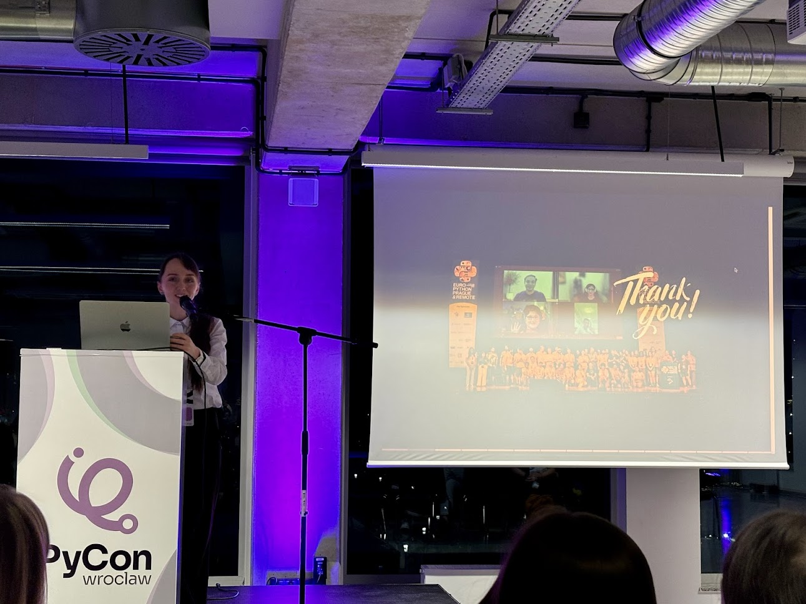

PyCon in the City of One Hundred Bridges, I Am Remarkable Workshop, and EPS Election Results and First Board Meeting
Last weekend, I had a chance to visit one of the most beautiful historic cities in Poland to participate in PyCon. I also held an IAmRemarkable workshop, and I was elected Vice Chair of the EuroPython Society. What a weekend!
Wrocław
I arrived at night, and walking around Wrocław felt absolutely magical! They call it the city of a hundred bridges because it sits across several rivers. With its stunning historical buildings and a touch of evening fog, it looked like something straight out of Hogwarts.
Dwarves
If you look down, you might spot small, adorable creatures reading a book, lounging, or even staring right at you. Yep, there are dwarves and they are everywhere! So cute!
Food
The first quest upon arriving to Poland was to find pierogi! Pierogi are dumplings stuffed with things like spinach, cheese, mushrooms, or veggies, and you can find them around every corner. And they are so tasty!
The second quest was to find zapiekanka! Basically, a baked bread loaded with toppings. I got one with cheese, and it was so good! Wrocław is also home to Poland’s oldest vegan restaurant, there is lots of international cuisine and plenty of typical Polish spots serving mostly meat, but I was able to find cheese almost everywhere.
Markets
I’m that annoying Christmas person who loves lights and holiday markets and Wrocław did not disappoint. The markets opened the day after I arrived and they’re so big and so shiny. Loved every bit of it.
Street art
I spent most of my evenings wandering around. The city has incredible street art. Wrocław has this historic and yet in the same time modern-cool vibe. Walking along the rivers, and there are so many, felt very peaceful. You could walk around for hours.
PyCon
This was my first time participating in PyCon in December and the Christmas vibe added something extra special. The speaker’s dinner was the night before, and the main event had about 150 participants packed into one day.
At PyCon Wrocław I received the best speaker’s gift ever: a Santa Claus-style hat and a Christmas ornament with the Python logo that I can hang on my tree!
IAmRemarkable
At EuroPython, I attended an I Am Remarkable workshop and immediately thought, “Why isn’t this everywhere?” It’s such a powerful way to break the stigma around self-promotion while giving you time to reflect on your own worth.
Facilitators for the workshop can be hard to find, so I decided to become one myself. I got my license in September, ran my first hybrid workshop at the company I work for in November, and just hosted my first fully onsite workshop at PyCon.
It’s been interesting to observe group dynamics during my workshops. In the hybrid workshop, the onsite participants were very active, while the online participants were mixed—some engaged and others not so much. For the onsite-only workshop, I expected everyone to be equally active, but the same pattern appeared: some participants were very active, while others were less so. I never want to call people out and make them uncomfortable, but I’d really like to learn how to create a space where everyone feels encouraged to participate in a comfortable, non-pushy way. If anyone reading this has ideas or tips on leading workshops, please reach out! I’d love to learn more.
Talks
I didn’t get to see many talks because I was either chatting with people outside or busy with my workshop. One talk that was highly recommended to me was “Building Python CLIs in 2024 does not have to be painful (feat. Typer and uv)” by Mateusz Zaremba and Krzysztof Wilczyński. I heard it was super interesting and fun, so I’ll definitely check out the recording as soon as it’s released.
Antonio Cuni gave a talk about Python performance, which I had already seen at PyCon Italia. If you haven’t seen it yet, I highly recommend it.
Łukasz Langa gave a talk on visualizing audio. I play clarinet and piano, but I’ve never tried programming anything related to music, but maybe it’s time to start! I didn’t catch this talk, but Łukasz mentioned it will be presented at other conferences next year.
Lightning Talks
Lightning talks are always the best part of any conference. I especially loved Marijka Romaniuk’s talk about her experience volunteering at EuroPython. It was so heartwarming to see someone take such joy in volunteering!

Thank You, Organizers!
As a fellow community organizer, I want to thank the organizers for the time and effort they put into making this event happen.
EuroPython Society Election Results
The next day after the conference, there were elections for the EuroPython Society Board, which I joined from my hotel room. In my previous blogpost I wrote about my motivation to run for the Board. Someone asked if I was considering running for Vice Chair. After some thinking, I said why not. There were two of us and we were both super supportive of each other and happy with whichever way it turned out. Transparency and democracy matter a lot to all of us involved, so we agreed to have open elections and let the members decide. I was elected with 63%!
Progress
We’ve already started preparations for the conference and things are off to a wonderful start! We have a new logo, and I have to say, it’s the most beautiful EuroPython logo I’ve seen so far - huge thanks to Adriana Sánchez for the design elements and Panagiotis Kyrillos for bringing it all together. We’re already tackling our first tasks to keep things moving forward.
I truly believe we’ll create an amazing space for people to share knowledge and connect and we’ll also get to tackle topics important for the future of the Society. If you’d like to get involved, keep an eye on our web/socials or reach out to me!
A Thank You To The Outgoing Board Members!
Today I came across the following line in Paolo’s blog:
We usually receive many congratulations at the time of elections, and none when a commitment, such as their mandate, comes to an end, so I say to them: congratulations!
I’d also like to take a moment and express my thanks to all the outgoing board members: Alexander Hendorf, Artem Kisloskiy, Laís Carvalho, Sangarshanan Veera, Sebastiaan Zeeff, Theofanis Petkos, and Vaibhav Srivastav.